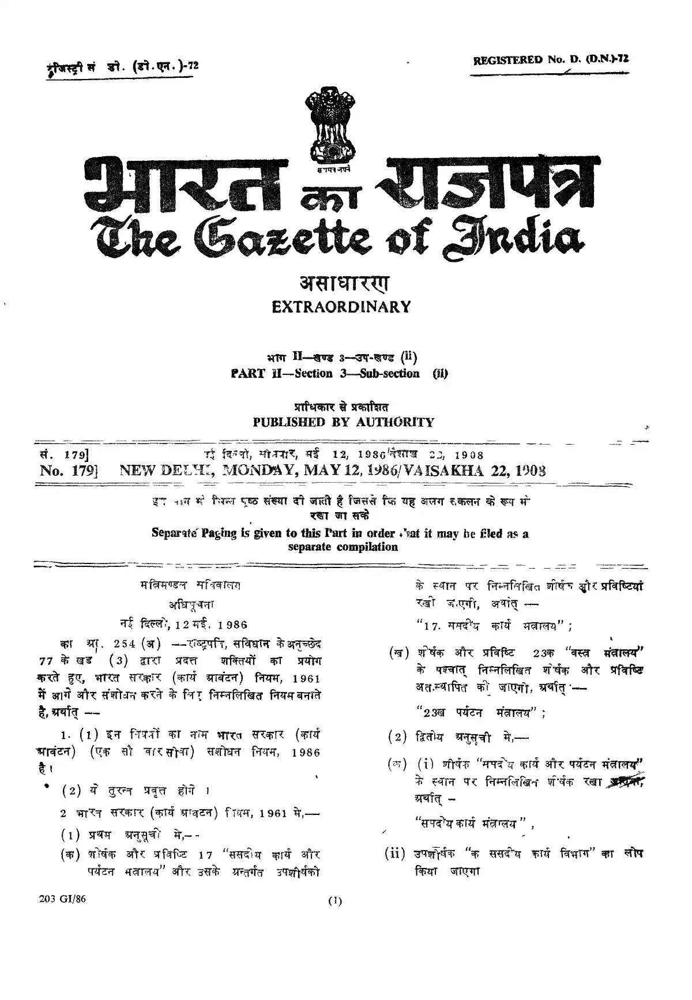
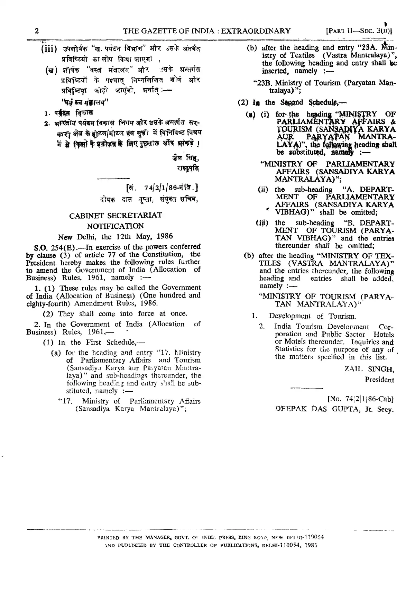

Amendment #184 (S.O. 254(E), 1986)
6 changes: 2 to the First Schedule, 4 to the Second Schedule. 6 applied
What it did to the ministries
- splitMinistry of Parliamentary Affairs and Tourism splits into Ministry of Parliamentary Affairs (18) and Ministry of Tourism (2) change 1, 2, 3, 4, 5, 6 · histories: Parliamentary Affairs and Tourism, Parliamentary Affairs, Tourism
The order, page by page
Page 1 of 2

Page 2 of 2

123456Schedule 1 › Ministry of Parliamentary Affairs and Tourism
- 17. Ministry of Parliamentary Affairs
applied at schedule 1 › ministry 17 in the Rules after #184
after Schedule 1 › Min- istry of Textiles
- 23B. Ministry of Tourism
applied at schedule 1 › ministry 23B in the Rules after #184
Schedule 2 › MINISTRY OF PARLIAMENTARY AFFAIRS & TOURISM
- MINISTRY OF PARLIAMENTARY AFFAIRS
applied at schedule 2 › ministry MINISTRY OF PARLIAMENTARY AFFAIRS in the Rules after #184
Schedule 2 › MINISTRY OF PARLIAMENTARY AFFAIRS › DEPART- MENT OF PARLIAMENTARY AFFAIRS
applied at schedule 2 › ministry MINISTRY OF PARLIAMENTARY AFFAIRS › department A in the Rules after #184
Schedule 2 › MINISTRY OF PARLIAMENTARY AFFAIRS › DEPART- MENT OF TOURISM
applied at schedule 2 › ministry MINISTRY OF PARLIAMENTARY AFFAIRS › department B in the Rules after #184
after Schedule 2 › MINISTRY OF TEX- TILES
- MINISTRY OF TOURISM
- 1. Development of Tourism.
- 2. India Tourism Develorment Corporation and Public Sector Hotels or Motels thereunder. Inquiries and Statistics for the purpose of any of the matters specified in this list.
applied at schedule 2 › ministry MINISTRY OF TOURISM in the Rules after #184
How this document was read
From the Government of India (Allocation of Business) Rules, 1961 and their amendments, as published by the Cabinet Secretariat (cabsec.gov.in), read by orgpedia. The readings of the older scanned gazettes have known gaps.